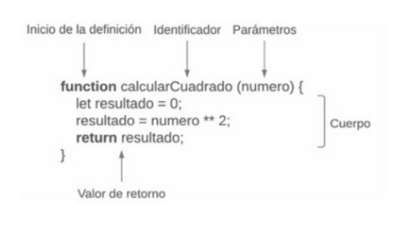
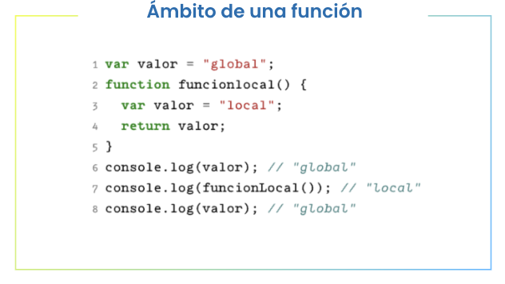

Tema 2 - Funciones en Javscript
¿Qué es una función?
Una función se constituye por bloques de código ejecutable a los que podemos pasar parámetros y operar con algo. Además, las funciones podrán devolvernos un resultado
Ventajas de utilizar funciones
- Reutilización de código
- Organización y Legibilidad
- Facilidad de mantenimiento
- Abstracción y Enfoque
- Reducción de errores
- Facilidad de pruebas
Partes de una función
¿Què es el ámbito de una funcion?
Es todas las variables dentro del bloque de la función más todo el ámbito del nivel de jerarquia anterior.
Tipos de funciones
- Función por declaración
- Función por expresión
- Funciones como objetos
- Funciones anónimas
- Funciones autoejecutables
¿Què es un Clousure?
Los clousures pueden ser utilizados para crear estructuras de datos privadas y controlar el accesoa a ciertas variables, manteniendo una interfaz limpia y bien definida.
Se crean cada vez que una función es creada.
Es decir, cada vez que una función cualquiera accede a una variable fuera de su contexto, estás usando un clousure.
Tipos de datos (string)
| length | slice | repeat |
| includes | toUpperCase | trim |
| indexOf | yoLowerCase | split |
| startsWtih | replace | |
| endsWith | replaceAll |
Métodos y propiedades útiles
| toFixed | Math.random |
| Math.round | Number.MAX_VALUE |
| Math.floor | Number.MIN_VALUE |
| Math.ceil | parseInt |
| Math.abs | parseFloat |
Volver al Inicio